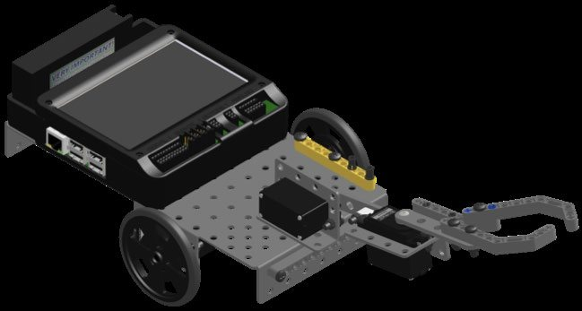

Unit 3 · Big Idea 5 · Capstone
The Double Stack
Student Lab · Mission 3 — Stack Both Cubes
Student PIN:
Overview
This is it — the moment everything comes together. Over this unit you built a whole toolbox: driving a measured distance, turning a reliable 90°, and lifting with a safe, smooth arm and claw. Today you'll compose those tools into a complete mission. Your robot will drive to a cube, pick it up, stack it on a cube of the opposite color — then reposition itself and do it a second time for the bonus. No new commands today. The challenge is planning: putting your tested tools in exactly the right order.
Core Insight
A complex mission isn't built from new code — it's built by sequencing reliable tools you already trust. The hard part is the plan, not the parts.
By the end of this activity you will be able to:
- Plan a full multi-step mission before writing any code.
- Compose your library functions into a working stack sequence.
- Reposition the robot to line up with a second target using turns and driving.
- Complete Mission 3 — two cubes stacked on opposite-color cubes.
Your toolbox (all from your library)
Tick_Drive(ticks) · Back_Drive(ticks) · turn_right() · turn_left() · move_arm(position) · move_claw(position) — plus your tuned values ARM_MIN, ARM_MAX, CLAW_OPEN, CLAW_SHUT. You'll build Back_Drive in Phase 2.
Phase 1 — Understand the Mission

Mission 3 — Stack a Cube, Then Stack Another
Base: stack a green or yellow cube ON TOP OF a cube of the opposite color.
Bonus (your goal today): do it twice — build two stacks.
The two stacks are in different spots, so after finishing the first, your robot has to move over and line up with the second. That repositioning is the new challenge.
Say the mission back in your own words. What makes the second stack harder than the first?
Phase 2 — Build a Missing Tool: Back_Drive
Your library can drive forward a measured distance with Tick_Drive — but a real stack needs the robot to back away after placing a cube, so it doesn't knock the stack over. You don't have a backward version yet. Let's build one, and the trick is in the encoder math.
When the robot drives forward, the encoder counts up: 0, 1, 2, 3... So Tick_Drive waits with while (gmpc(0) < ticks) — keep going until the count climbs to the target.
When the robot drives backward, the wheel turns the other way, so the encoder counts down into negatives:
So to back up the same distance as Tick_Drive(1000), you wait until the count reaches −1000. The question is how to write that comparison.
Picture the number line. You start at 0 and slide left toward −1000. The whole time, your count is greater than −1000 — until you arrive. So the loop runs while k.gmpc(0) > -ticks:
You still pass in a positive number — Back_Drive(1000) — and the function flips the sign for you. The -ticks turns your 1000 into the −1000 target.
Explain in your own words why the loop uses > -ticks instead of < ticks. What is the encoder count doing as the robot backs up?
Test it: call Back_Drive(1000) right after a Tick_Drive(1000). Did the robot return to about where it started? Add Back_Drive to your library when it works.
Phase 3 — Plan: Map the Field
Before a single line of code, draw your plan. Mark your starting box (drawn for you), both cube pairs (the cube to lift and the cube to stack on), and the path your robot will travel. This map is what your whole program will be built from.
BOX
Draw on the printed copy, or describe the layout in the box below.
Phase 4 — Plan: Write the Sequence for Stack 1
Now turn your map into an ordered list of moves — in plain English first, then the library function each one becomes. Think through the whole grab: arm up and claw open to start, drive to the cube, lower, grab, lift, carry, lower onto the base cube, release.
| # | What the robot does (plain English) | Library call |
|---|---|---|
| 1 | Arm up, claw open (get ready) | |
| 2 | ||
| 3 | ||
| 4 | ||
| 5 | ||
| 6 | ||
| 7 | ||
| 8 |
Phase 5 — Plan: Reposition to the Second Stack
With stack 1 done, your robot has to move over and line up with the second pair of cubes. You'll do this with the tools you have: turn, drive, turn back. Turn to face the direction of the second stack, drive over to it, then turn back to face the cubes — squared up and ready to repeat.
For example, to shift to the right and face forward again:
The two turns cancel out your heading, so you end up facing the same way — just shifted over. The drive distance lines you up with the second pair.
Which way does your robot need to shift for stack 2 — left or right? Write the three calls (turn, drive, turn back) you'll use, with your tick value. (You can use Tick_Drive or Back_Drive depending on your path.)
Phase 6 — Build: The Whole Mission in main()
Now write it for real. Here is the frame — nothing more. Include your library, enable your servos, and you'll fill each section with the calls from your own planning tables in Phases 4 and 5. There are no answers to copy here on purpose: the sequence lives in your plan, and only you have it.
Translate your plan line by line. Each row of your Phase 4 table is one function call. If you skipped the planning, this is where it catches up with you — go back and finish your map first.
Before you run it: read your main() out loud as a list of actions. Does it match the path you mapped in Phase 3? Fix any step that's out of order.
Phase 7 — Run, Test, and Tune
Run the mission. It almost certainly won't be perfect the first time — that's normal for a full mission. Test it in pieces: get stack 1 working first, then the reposition, then stack 2. Record what you fix.
Debug in chunks
Don't try to fix the whole run at once. Comment out everything after stack 1 and get that perfect. Then add the reposition. Then stack 2. A mission is easiest to fix one piece at a time.
| Try | Which part failed? | Why (your best guess) | What you changed |
|---|
Mission Checklist
| Goal | Done? (✓) |
|---|---|
Stack 1: cube placed on opposite-color cube | |
Reposition: robot lined up with second pair | |
Stack 2: second cube placed on opposite-color cube |
Which part of the mission was hardest to get right — a stack, or the reposition? Why?
Phase 8 — Connect & Reflect
AI Literacy Thread
Complex tasks are accomplished by sequencing reliable, reusable behaviors.
You just completed a real mission — and you did it without writing a single new low-level command. Every piece was a tool you'd already built and tested. That's how all complex automation works: a warehouse robot fulfilling an order, a factory line assembling a product, a Mars rover collecting a sample — each is a sequence of reliable, reusable behaviors, planned carefully and run in order. The intelligence is in the planning and the trust you've earned in each part.
Complete the reflection on your own.
1. You wrote a whole mission using only library functions. Why was planning the sequence the hardest part, not the code itself?
2. Explain how the reposition (turn, drive, turn back) lined the robot up with the second stack without changing the direction it faced.
3. If one library function (say turn_right) was slightly off, how would that affect the whole mission? Connect this to why you tuned each tool carefully first.
4. Complete in 2–3 sentences: "Complex tasks are accomplished by sequencing reliable, reusable behaviors. This means that to build a hard mission, I should first..."
Extension Challenges
Finished early? Try one or more of these.
Extension A — Make the Stacks Opposite Colors
- Mission 3's top bonus is making the two stacks opposite colors from each other. Plan how your cube choices would change to earn it.
Extension B — Speed It Up
- Where is your mission slowest? Could a shorter
msleepin your servo moves, or a faster drive, save time without losing reliability? Test it.
Extension C — Recover From a Miss
- If the robot drops a cube, what could it do to try again? Sketch an idea using your existing tools.
Extension D — Add a Third
- If there were a third pair of cubes, what would you add to your mission? Write the plan for reaching and stacking it.
Extension E — Beyond the Classroom
- This course leads to a real KIPR Botball tournament, where your robot competes against other schools' teams — a real event beyond your classroom.
- In 2-3 sentences, what's one way your work in this course could be useful or interesting to someone outside your school — a younger student, a parent, a future employer?
When you are finished, press the button to turn in your work and save a copy.
KIPR · Botball Explorer · Unit 3 Big Idea 5 — Capstone Lab